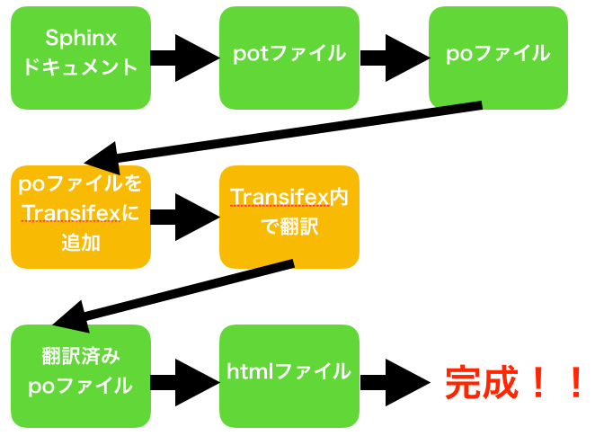

PyLadies ハンドブックをSphinxとTransifexで翻訳した話¶
お前誰よ¶
大村亀子（ @okusama27 ）
牛のマークで活動, Python歴3年, 最近、筋トレにハマっています。

PyLadies Tokyo のスタッフを今年の4月からやっています。
BeProudという会社で、Pythonオンライン学習サービス『PyQ』の開発をしています。
PyLadies Tokyo 3周年パーティー以降のこと¶
2017年10月¶
PyLadies Tokyo - 3周年記念パーティ¶
去年のパーティーも楽しかったですね！
この頃は普通の参加者でした。イベントやコミュティーのTシャツ集めるの好きなだけで「シャツ着ているけどスタッフじゃありません。」が、持ちネタでした。


{kind=link}
2018年1月¶
スタッフになりました！！¶
{kind=link}
「スタッフになりたーい！」 と言うとなれます！興味がある方は声かけてください！！
土日の参加は厳しいときもありますが、 翻訳しNight! があまり進んでいなかったようなので、主導するためにスタッフになりました。
2018年2月¶
PyLadies Tokyo Meetup #29 テストをまなぼう¶
講師に初挑戦しました。PyLaidesには 講師も女性 という鉄の掟があります。
メンバーの方、外部の方も積極的に講師をやっていただけると嬉しいです。
普段は講師なんて！って思っている方も講師というより 自分が勉強したことをわかりやすく人に説明する という気持ちで挑むと心が安らかになります。
2018年3月〜9月¶
他にもたくさんのイベントに参加できました。家族とみんなに感謝！
- PyLadies Tokyo Meetup #30 PythonでIoT!
- PyLadies Tokyo Meetup #31 Python入学式
- PyLadies Handbook 翻訳しNight 〜第3夜〜
- PyLadies Tokyo Meetup #34 PyLadies × XR女子部交流会
- PyLadies Handbook 翻訳しNight 〜第4夜〜
- PyLadies Tokyo Meetup #35 もくもく会
- PyLadies Handbook 翻訳しNight 〜第5夜〜
{kind=link}
Sphinxからpoファイル作ってTransifexで翻訳してから、Sphinxに戻した話¶
pyladies-kit¶
PyLadies 本部に、どの地域でもPyLadiesを始められるように pyladies-kit が用意されています。
1 2 | $ pip install pyladies
$ pyladies handbook
|
これを 翻訳して、本家に取り込んでもらおう! という目標のもと始まりました。
まず、第１段階として 行動規範 と、 ハラスメントを受けた場合の対処法 の部分をPyCon JP 2018までに翻訳する事になりました。
Sphinxが便利すぎる¶
本家のハンドブックがSphinxプロジェクトなので、簡単に翻訳できます。
poファイルって見にくい¶
生のpoファイル
# 283ad006df7242c59abb816f7d85b03f
#: ../../about.rst:4
msgid "About"
msgstr "" ←ここに翻訳を書く
# 55b61f6216ec4b70a10a738011d5cc82
#: ../../about.rst:6
msgid ""
"We are an international mentorship group with a focus on helping more "
"women become active participants and leaders in the Python open-source "
"community. Our mission is to promote, educate and advance a diverse "
"Python community through outreach, education, conferences, events and "
"social gatherings."
msgstr "" ←ここに翻訳を書く
# 3eeae7895cb74421a96d163b715a0835
#: ../../about.rst:8
msgid ""
"PyLadies also aims to provide a friendly support network for women and a "
"bridge to the larger Python world. Anyone with an interest in Python is "
"encouraged to participate!"
msgstr "" ←ここに翻訳を書く
Transifexが便利すぎる¶

{kind=link}
みんなありがとう！！¶
延べ約30人の翻訳者の方！¶
使い方を教えてくださったSphinxコミュティーの方！¶
これからもハンドブックの翻訳は続けていきますので、興味がある方は Slackの #handbook-translation まで！
また、ハラスメントを受けた方は、スタッフにダイレクトメッセージを送るか、Slackの #pyladies-support まで！
あと、 2018年11月28日 に SphinxCon JP 2018 が開催されます。connpassで募集してました。私も行くので、一緒に行きましょう！！
これからもPyLadies Tokyoをよろしくおねがいします！¶
いつでも参加をおまちしています。
スタッフ募集中です。
講師（女性）も募集中です。こんなことなら、話せるかも！などありましたらスタッフに声をかけてください！